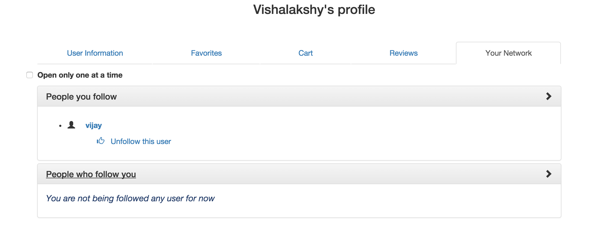
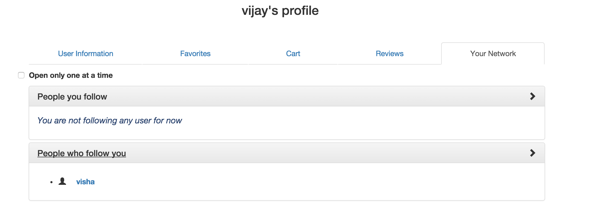

Follow/Unfollow users
This is a very interested and complicated functionality available in this application. This feature lets users to
follow any user that he wishes to follow. If a user say A follows another user named B, then A can see all the reviews
and favorite products of B. 'A' can add favorite products from B's list to his own favorite's list without affecting
B's list. A can also view the list of reviews written by B. Now B will appear in A's follows list and A will appear in
B's followed by list. In the screenshot given below, user named 'visha' is following another user named 'vijay'. In
'visha' profile users she follows will appear as given below :

Since this is a two-way relationship, A following B means B is followed by A. So in Vijay's profile, visha will appear
in followed by list as given below.

If a user wants to unfollow a user from his list, he can do that by clicking the 'Unfollow this user' link.
Technologies used :
- HTML5
- CSS3
- Bootstrap
- AngularJS
- Node.js
- MongoDB